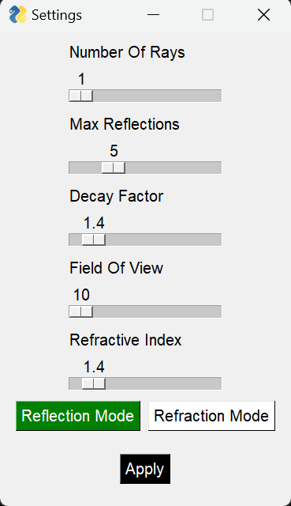
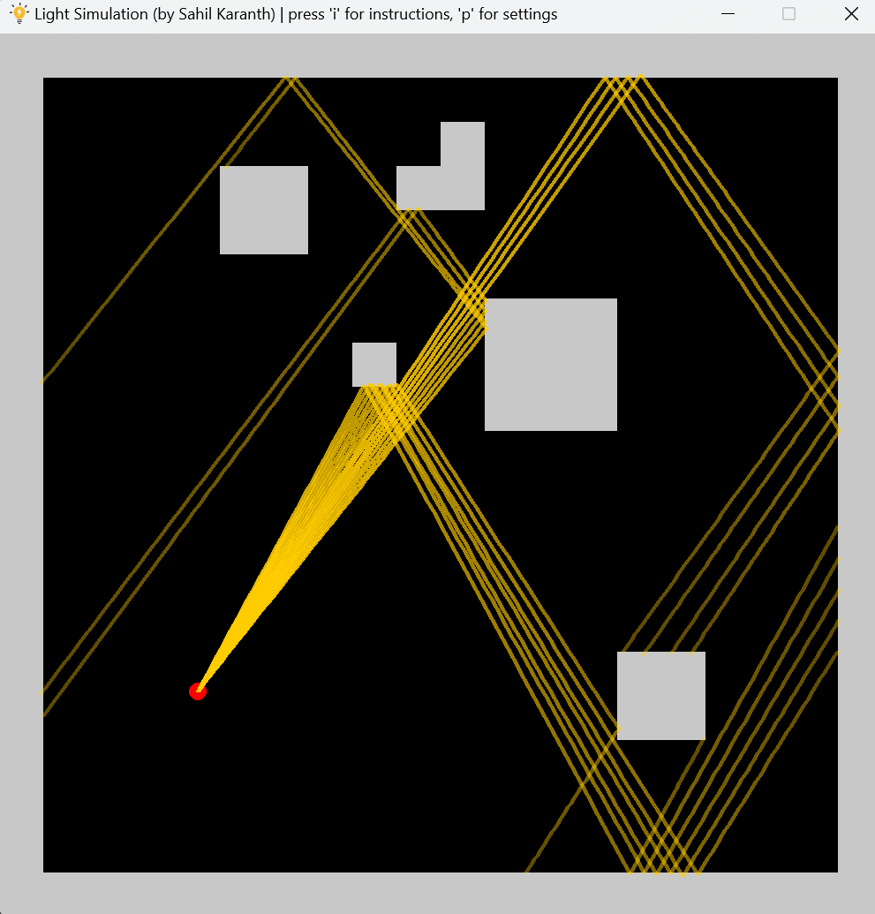
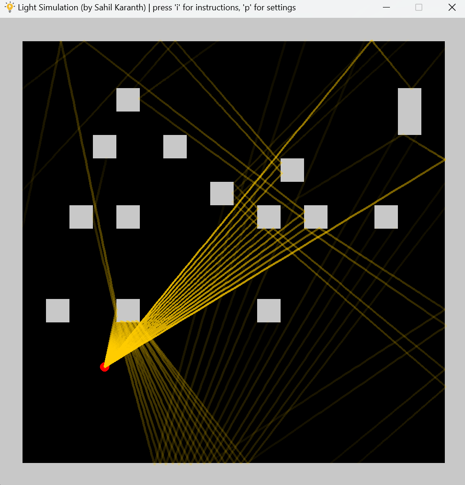
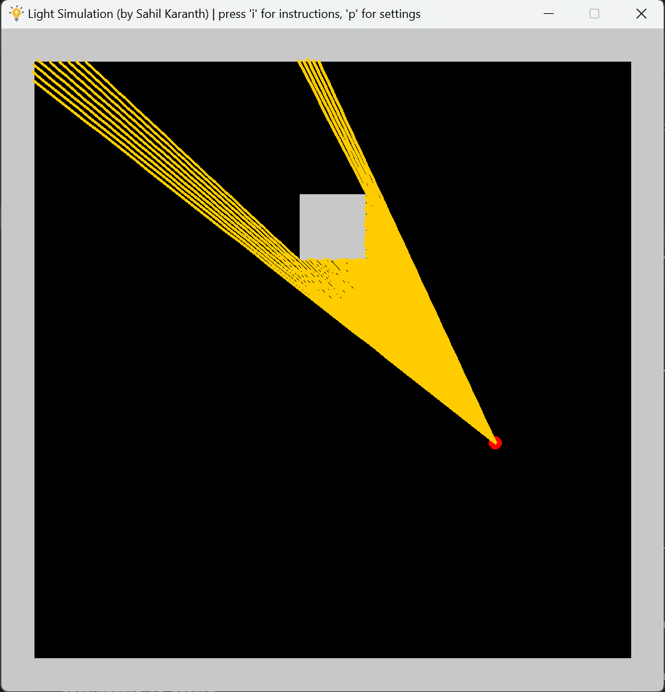
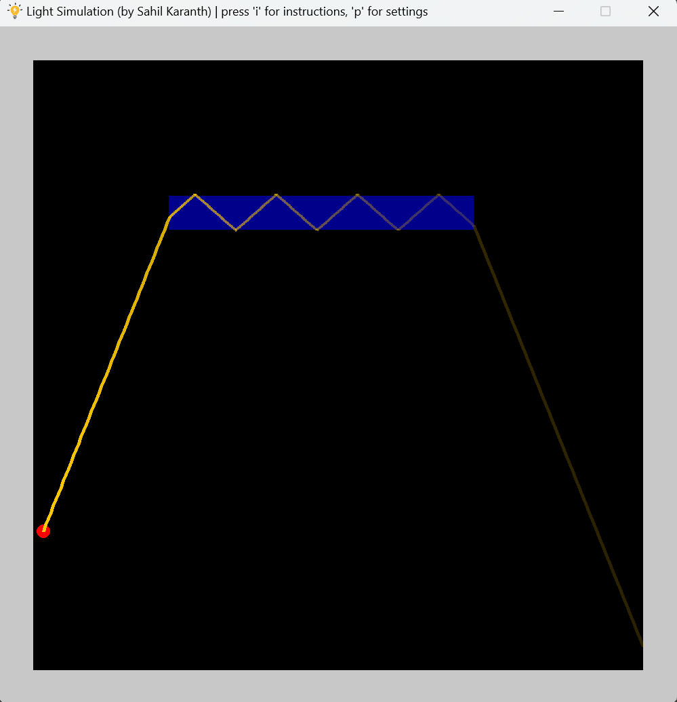
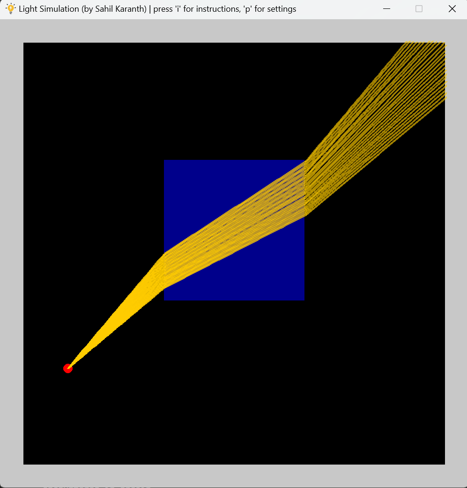
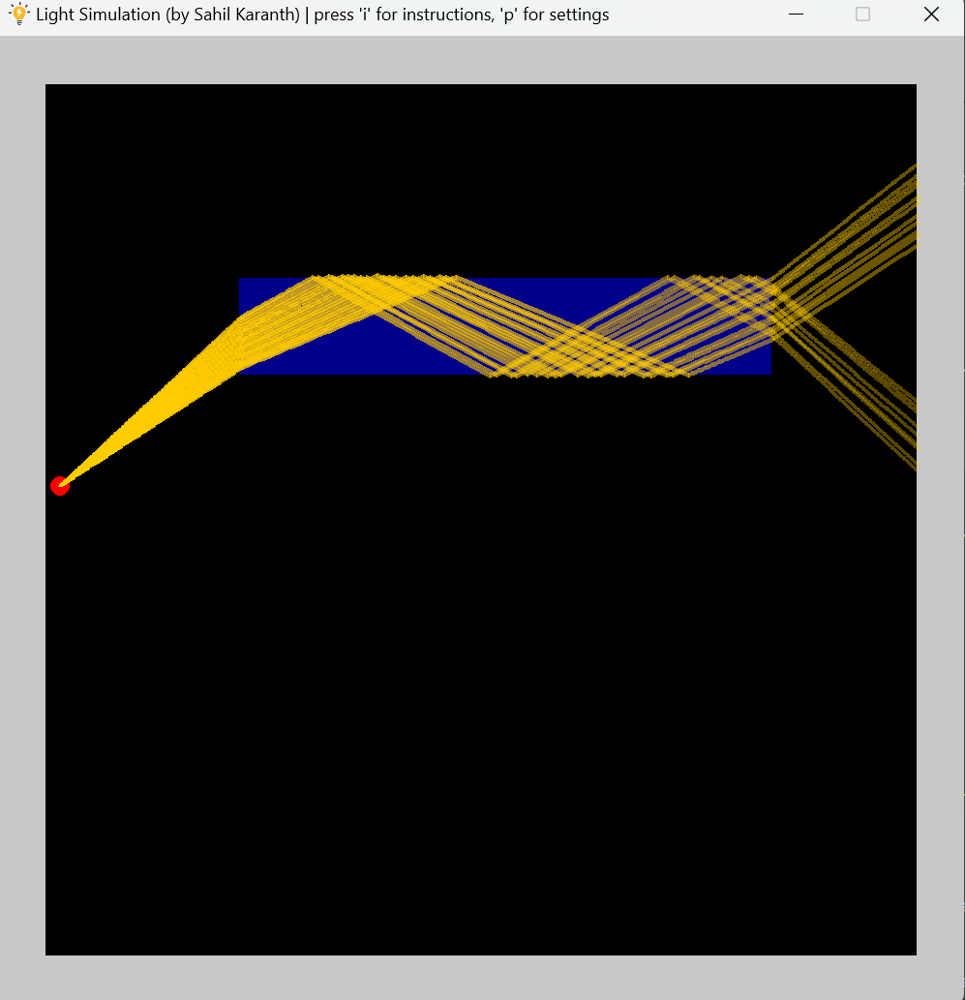
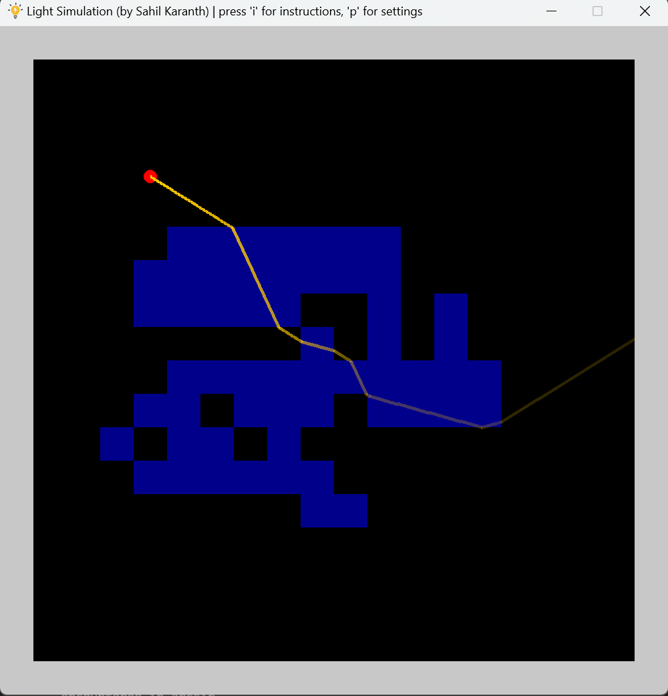

This project is a physics light simulation which can be used to teach the properties of light in GCSE physics lessons. Collisions were detected with an incremental raycasting algorithm which I implemented and adapted from the normal approach with a 'retracing' step. This algorithm along with other vector and matrix rotations were used to make the collision system - Pygame was only used for drawing graphics.
Drawn on reflection/refraction blocks are referred to as 'cells' on this page and are stored in a 2D matrix.
This was a more technical project, with lots of time spent on paper coming up with required algorithms such as determining if a ray hit a horizontal or vertical wall and the 'retracing' idea.
User Features:
Technical Features:

Initially I implemented the Digital Differential Analyzer (DDA) algorithm with my system. While it was very efficient, the hit detection was not precise enough for accurate simulation so I switched to using an increment vector approach where I extended a ray in small increments until it detected a hit against the map matrix and while this was very precise, detecting whether a hit surface was horizontal or vertical on the point between two cells reliably required a very small increment so the system became very laggy. To compensate for this I determined that a change in both x and y coordinates from the previous increment to the one which resulted in a hit indicated that a cell edge had been hit. At this point, I undo one increment of the trace and decrease the increment vector by a factor of 100 before continuing the trace. This method is significantly more efficient than a fixed increment vector.
These three images demonstrate the reflection mode. The third image is reflection mode with a max reflection number of zero which serves as a neat explanation of shadows for younger children.



These four images demonstrate the refraction mode. The left two images show how the simulation can be used to explain the principle of optic fibres. And the bottom right image shows that you can get some pretty cool looking paths traced!



